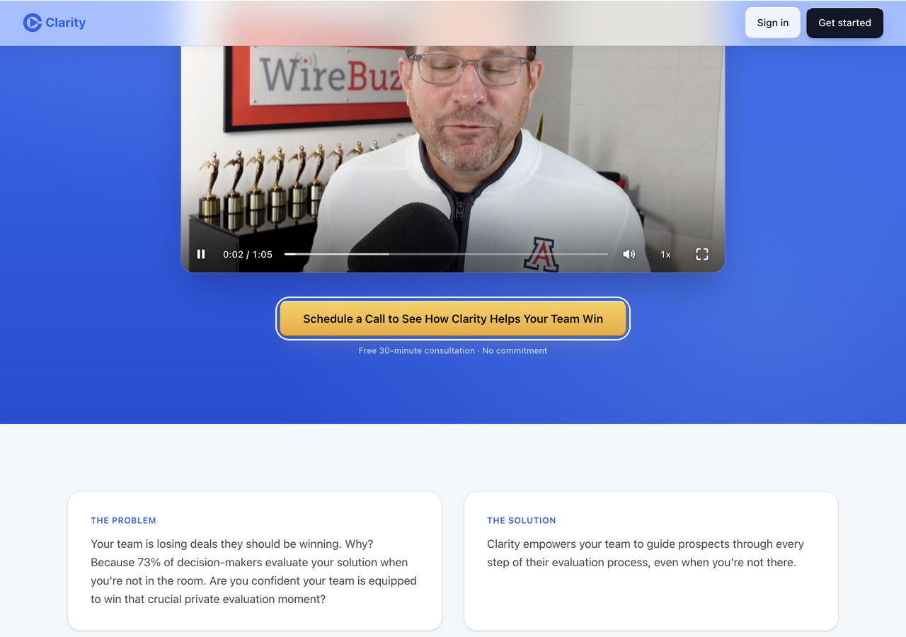
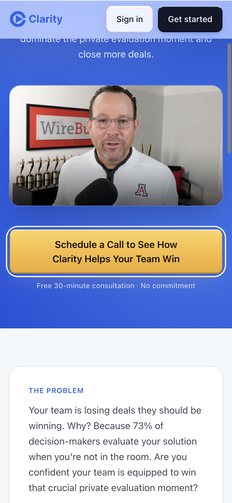
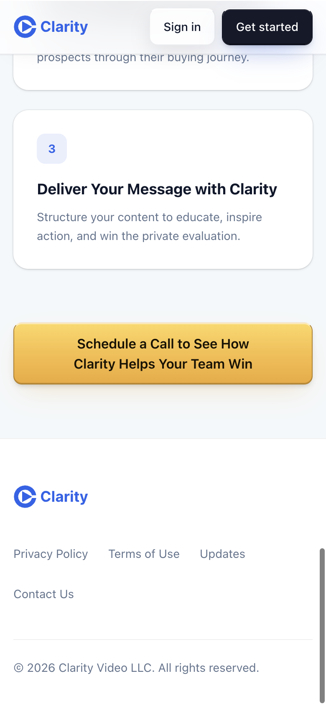
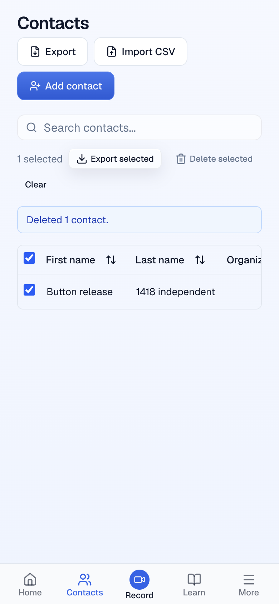
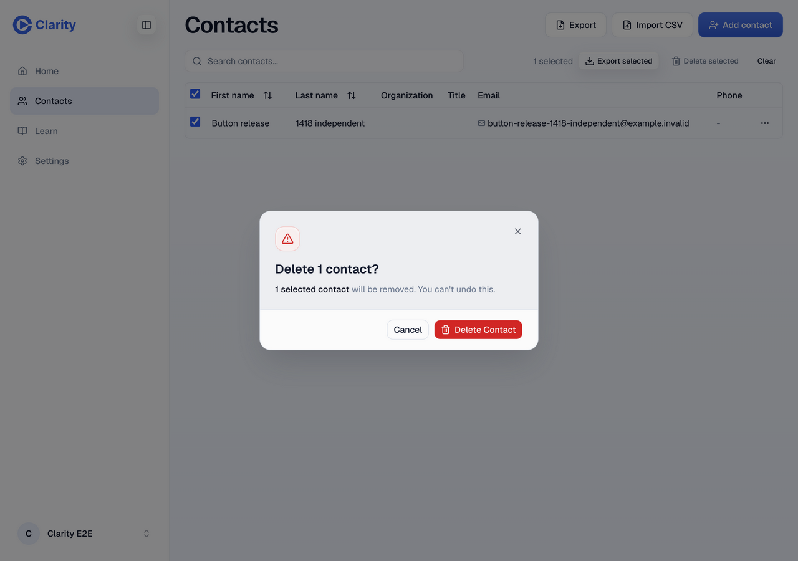
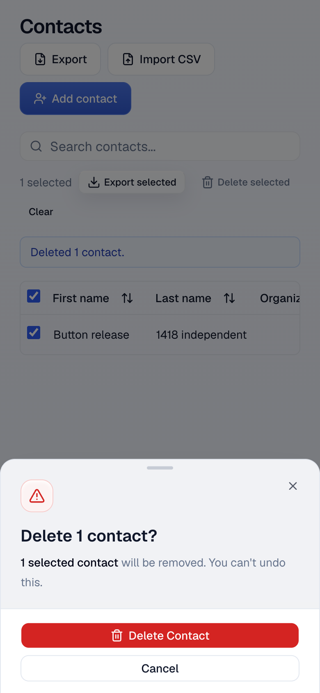
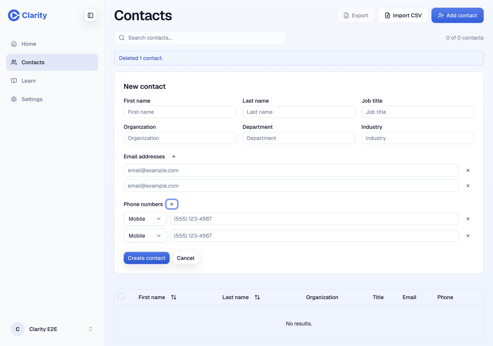
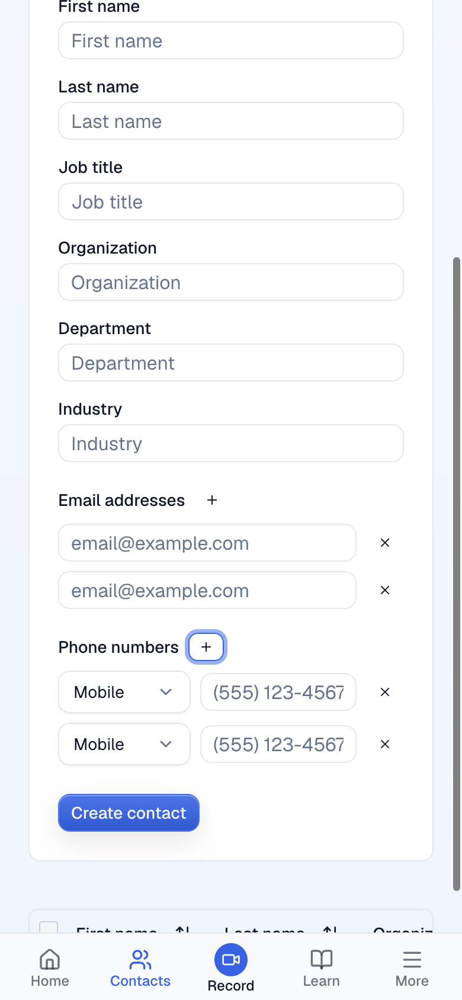
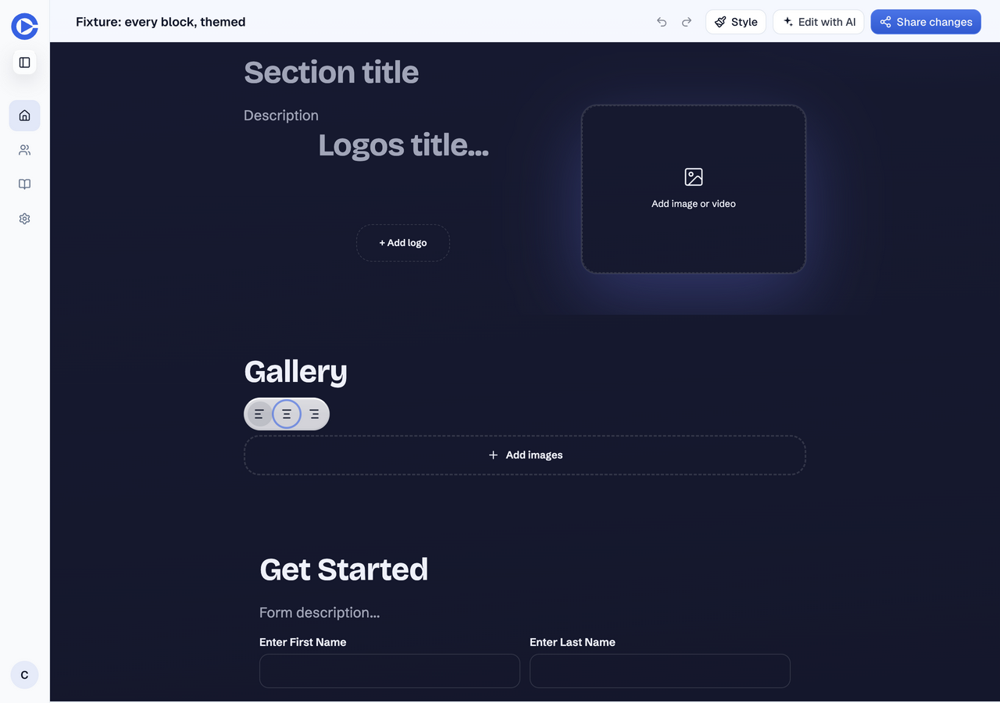
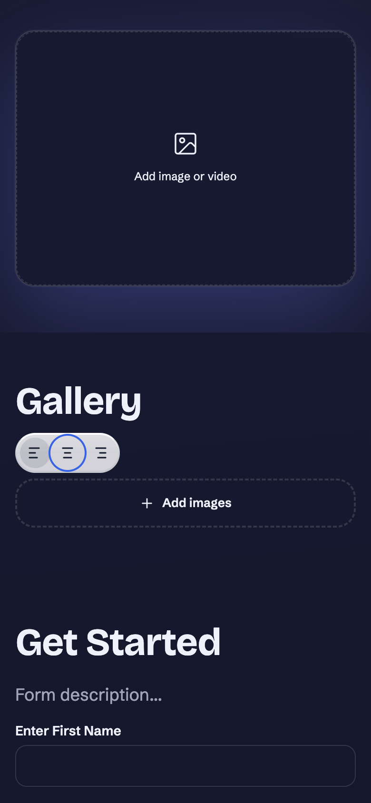

What the review improved
Newer main already supplies a flat outline in panel dialogs and the approved solid danger color. The merge reuses these existing treatments and removes the redundant outline-flat and destructive-filled variants and color tokens. It preserves the newer responsive dialogs, folder controls, shape selection and analytics behavior.
Opus identified an obsolete CtaRowEditor vendor-import exemption and a manually maintained button ledger that had drifted from the code. The exemption is removed; a regression check now rejects that direct vendor import. The ledger points to the generated inventory. An unused admin-header prop is removed. The Teams hero's white keyboard-focus outline is moved outside the gold button's blue outline.
The review fixes remove 51 net lines. No new permanent review tooling or dependency was added.
Checks
| Check | Result | Evidence |
|---|---|---|
| Source review | Pass | Requested Claude Opus 5.5 completed a substantive independent review and a scoped recheck. Both blockers are fixed. No confirmed functional button, auth or billing blocker remains. |
| Repository gate | Pass | Full gate after merging main: 5,402 tests, all typechecks, lint and guard freshness. Editor 4,174, workspace-tree 647, frontend-router 244, scripts 337. Final fixes also pass editor typecheck, lint and inventory/reuse-guard tests. Current-head CI runs the complete gate and build. |
| Preview | Pass | Signed-in doctor confirms served head/commit and identity. Deployment, auth, video routes, smoke, password smoke, critical flow and preview E2E pass. Preview run, CI run. |
| Fresh independent UI | Pass | Desktop and phone checks pass for both gold CTAs and their focus ring, Contacts keyboard controls and CRUD, flat/danger dialog buttons, and editor Alt+F10/Tab focus. Every final screenshot was inspected. The independent verdict is VERIFIED for that bounded pass. |
| Stored data and cleanup | Pass | API-backed contact creation, cancellation and deletion checks. Independent read-back and cleanup summary below. Seeded fixture contents are preserved. |
| Auth and billing invariants | Pass | A separate source pass verifies native anchor semantics, encoded redirectTo, disabled destinations and unchanged session/mutation behavior. No policy change. Mechanical scan candidates are unchanged HTML comments and static marketing image URLs. |
| Inventory and limits | Pass | Inventory regenerated: 24 ui modules, 387 components, 168 Button source sites, 55 ButtonBase sites, four styled navigation sites. CSS budget and file-size checks pass. All suppression changes shrink or remove existing allowances. |
| Production preflight | Pass | All declared production database bindings have no pending migrations. Current router version recorded for rollback: 666b5c98-ff41-4c19-b780-4262aaf23b80. Branch adds no migration or Worker change. Production is not changed by this preview report. |
| Known limits | Documented | Final-head upload cancellation and attached-media focus were not recreated. Earlier real preview evidence is linked below; current source/component checks and final-head CI cover the preserved action. Live admin-table checking remains limited by a rejected configured admin login. No external SSO handoff, contact-us message or payment-card removal. No physical-phone test. |
| Harness recovery | Recovered | Intermittent GitHub/Cloudflare network connections were retried. Native screenshot file-save failed; snapshot ImageContent without file-save captured the same deployed app and was decoded locally for inspection. No replacement browser was used. |
Before and after
These earlier artifacts preserve the approved decisions. They are historical evidence at their recorded heads, not final-head captures.
Final-head screenshots
Native T3 captures of synthetic test data, seeded fixtures or public marketing content. Phone viewports test CSS layout in the desktop browser; no physical phone was used.


Teams hero keyboard focus
The gold CTA has a visible white focus outline outside its blue ring.
/teams

Teams hero on phone
Gold CTA wraps inside the 390px viewport.
/teams

Teams closing section on phone
The closing section uses the same shared gold treatment.
/teams

Selected-contact actions
Delete selected uses quiet danger. The table scrolls within its container.
/contacts

Desktop deletion confirmation
A reopened desktop modal shows flat Cancel and solid danger confirmation.
/contacts

Phone deletion confirmation
The established phone sheet uses the same shared treatments.
/contacts

Contacts add/remove controls
Enter and Space add exactly one field; removal returns each group to one.
/contacts

Contact fields on phone
Compact shared controls fit without document overflow.
/contacts

Editor keyboard toolbar
Alt+F10 and Tab reach Center while preserving the toolbar and focus ring.
/edit/e300555e-6ee9-5dda-aecb-26f50e242a73

Editor toolbar on phone
The same focus sequence works on phone without changing seeded content.
/edit/e300555e-6ee9-5dda-aecb-26f50e242a73Independent evidence
# Independent release verification VERIFIED for the bounded final-head pass. No product blocker found. Target: https://pr-1418.clarity-video.workers.dev Head: 883c65604f100ca450bb2e3ed02cb86dd826f02d Base: 6cb208a87530369a35e926e4da8b0f976c736df2 Run date: October 14, 2026 Native T3 browser, explicit fresh tab_h. Desktop 1280×900 and phone 390×844 CSS pixels. Phone screenshots contain 2× pixel density. Final deploy-info GET 200 and auth/me GET 200 with an identity. ## Passed - Teams hero and closing CTA use identical approved gold gradients. Desktop controls measure 489.875×50; phone controls measure 358×74 and wrap cleanly. No document horizontal overflow. Native keyboard traversal reaches the hero CTA with focus-visible. Its wrapper shows a 2px white outline with 4px offset. Captured and inspected teamsDesktopFinal.png, teamsPhoneHero.png and teamsPhoneClosing.png. No call booking or external handoff was started. - Contacts email and phone add controls each create exactly one new field using Enter and Space respectively. Remove controls return each group to one field. Add controls are shared ghost xs, 30×24; remove controls are shared ghost icon, 32×32. Native keyboard focus is visible. Desktop and phone layout have no document horizontal overflow. Captured and inspected contactsFormDesktop.png and contactsFormPhone.png. - Contacts selection uses the quiet danger trigger with transparent resting background and no shadow. Captured and inspected contactsSelectedPhone.png. Contacts table scrolls internally on phones, as expected. - Shared deletion confirmation has flat panel outline Cancel with computed box-shadow none and white resting background in light mode. Final Delete Contact is danger with solid red oklch(0.577 0.245 27.325), white text, and no shadow. Also inspected these values in dark mode. Phone opens the established bottom sheet; desktop opens the centered modal. Captured and inspected contactsConfirmPhone.png and contactsConfirmDesktop.png. Each screenshot shows a real persisted synthetic contact. The normal desktop modal was reopened at desktop width, rather than captioning an already-open phone sheet resized wider. - Created a temporary synthetic contact through the actual form. GET /api/contacts 200 confirmed it. Native Enter on Cancel closed confirmation and GET confirmed the contact remained. Native Enter on final Delete removed it. Repeated for steady screenshots, including one API fixture POST 201 for the normal desktop modal. All three synthetic contacts were deleted through the actual final-delete control. Final GET /api/contacts 200 returned count 0 and none of this run's synthetic contacts. - Seeded editor page GET /api/journey-pages/e300555e-6ee9-5dda-aecb-26f50e242a73 200 supplied the displayed Gallery block. Alt+F10 from the Gallery heading reaches Left. Tab reaches Center with focus-visible and solid outline while the toolbar stays mounted. Tabbing past Right closes the toolbar. Passed on desktop and phone; no document overflow. Captured and inspected editorPhoneFinal.png and editorDesktopFinal.png. No heading, alignment, media or other content was changed. Blocks, theme, brand, name, meta and schema remained identical on GET read-back. The app normalized response extras user_id, corp_id and affiliate_id during hydration; the comparison therefore excludes those identity extras and does not claim whole-response byte equality. - Independent connected-source check of auth navigation and billing controls relative to origin/main found no mutation or identity-policy change. Marketing anchors and reset-password Link retain native navigation. SSO uses URLSearchParams for redirectTo, omits href and tab order while disabled, and prevents a programmatic click from starting a handoff. Existing interaction tests cover native Space/Enter semantics and disabled destinations. Billing changes only presentation, accessible label and busy state; its session-resolved endpoints, default-card guard, click handler and pending disable are unchanged. ## Evidence limits - Upload cancellation was not recreated on this final head. The root's October 12 real upload/cancel API evidence, current source/component checks and final-head preview CI cover that unchanged action. Do not label the earlier upload screenshots as October 14 captures. - The current all-block fixture has empty media placeholders. Attached-media focus was not driven on this final head, to avoid changing the seeded page. Earlier independent runtime evidence and current interaction tests cover the preserved overlay behavior. - No external SSO handoff, contact-us submission or real payment-card removal was performed. The admin-table live check remains limited by the previously rejected configured admin login; source/tests cover the shared defaults. - Native snapshot with save=true and native recording start repeatedly failed on the preview client. Native snapshot with includeImage=true and save omitted succeeded. ImageContent was decoded locally, then every final screenshot was inspected. Some native evaluations with undefined return values produced generic errors; corrected expressions returning an explicit value worked. Keyboard actions and API-backed flows were then confirmed. These are recovered harness failures, not passing product assertions. ## Public artifact whitelist Publish only the ten named final PNGs above and this sanitized report if useful. Do not publish contact-after-delete.png, credential/state files, raw snapshot diagnostics, raw identity responses or local browser paths. The final screenshots show synthetic fixture/contact data and public marketing content only. Cleanup is complete for this run's contacts. No uploads, messages, SSO handoffs or payment mutations were created. No seeded content edits or production mutations were performed. Source was not edited by this checker.
Console and network
Final deploy-info and auth/me returned 200 at the exact candidate SHA. Synthetic Contacts were created through the form and one fixture POST returned 201; GET read-back confirmed creation, Cancel preserved a contact, final Delete removed it and final GET returned count zero. Seeded editor GET returned 200 before and after keyboard checks with content unchanged. Failed capture/recording and connection attempts were recovered and are recorded as harness errors. No globally empty console history is claimed.
Remaining scope
Broader component-family refinement stays on issue 1380. Nonblocking suggestions about the completed-upload transition, disabled-anchor screen-reader role, the existing skill symlink and minor wording were deferred. This delivery keeps the approved button scope.
Final report artifact audit passed. Independent verifier confirmed screenshots, captions, scope and public privacy.